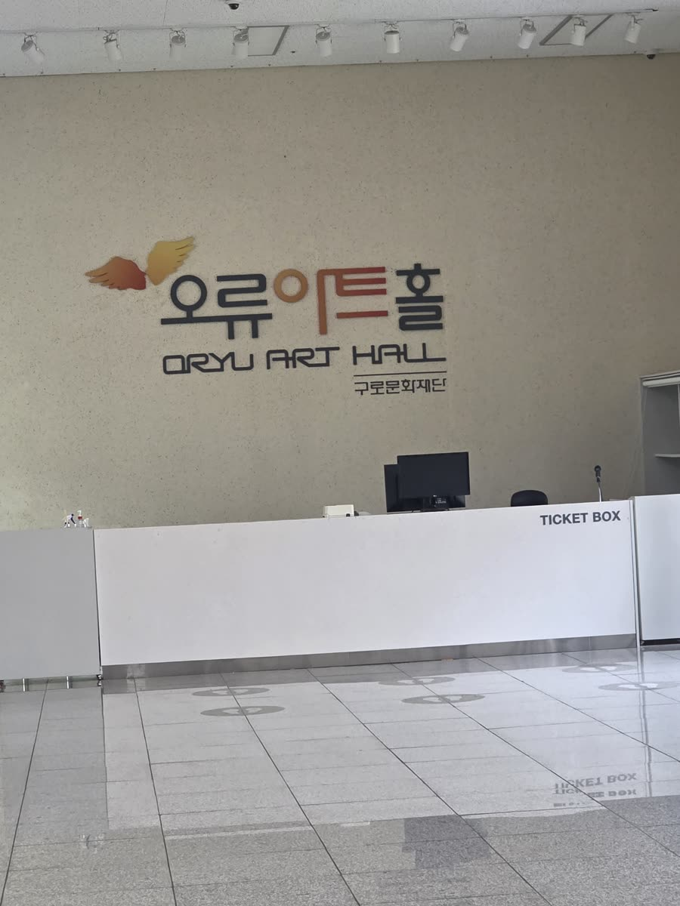

1곡 이야기
35년 경력 국가공인 피아노조율사 박근성의 자작곡이에요. 그랜드피아노를 아트홀로 운반하고, 공연용으로 대여하고, 무대에서 조율을 마친 뒤 — 소리가 고르게 잘 맞았는지 제 곡으로 확인했어요.
다장조(C장조) · 4/4박자 · 약 ♩=100 · 13마디
📞 피아노 조율·운반·대여 문의 010-8756-8740
오늘 아트홀에서 그랜드피아노를 운반·대여·조율한 뒤, 조율 상태를 제가 작곡한 곡으로 직접 연주하며 테스트했어요.
같은 곡을 ① 피아노 → ② 플루트 → ③ 바이올린 → ④ 셋이 함께로 바꿔 들어 보세요.
ⓒ 작곡 박근성 (성실피아노) · 무단 복제·편곡·사용을 금합니다.

35년 경력 국가공인 피아노조율사 박근성의 자작곡이에요. 그랜드피아노를 아트홀로 운반하고, 공연용으로 대여하고, 무대에서 조율을 마친 뒤 — 소리가 고르게 잘 맞았는지 제 곡으로 확인했어요.
다장조(C장조) · 4/4박자 · 약 ♩=100 · 13마디
📞 피아노 조율·운반·대여 문의 010-8756-8740
① 은 아트홀 그랜드피아노 실제 녹음, ②~④ 는 작곡자 멜로디 악보로 만든 컴퓨터(MIDI) 악기 소리예요. · 🎬 세로 영상(mp4) 보기
마디를 누르면 그곳부터 들려줘요. 멜로디는 작곡자가 불러 준 그대로, 왼손 반주는 초안이에요.